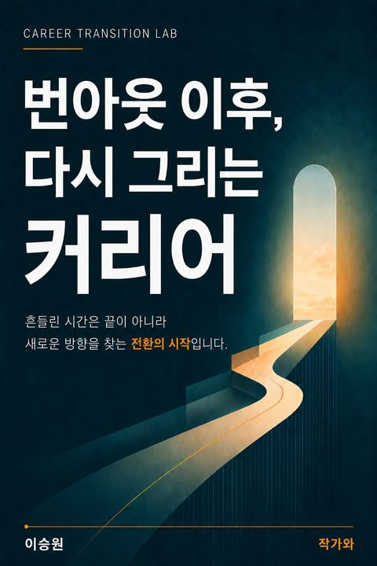

Career Transition Lab · 출간 전자책
번아웃 이후,
다시 그리는 커리어
지친 상태에서 이직부터 결정하기 전에, 지금의 일과 다음 선택을 차근차근 점검하는 90일.
리디에서 책 보기 ↗
이런 독자를 위한 책입니다
입사 5~10년 차에 번아웃·매너리즘·이직 고민이 겹친 30대 직장인을 위해 쓴 책입니다.
책에서 다루는 질문
- 지금 필요한 것은 회복, 역할 조정, 이직 중 무엇일까?
- 직무 전환 경험에서 어떤 가능성을 찾을 수 있을까?
- 다음 90일 동안 무엇을 작게 실험해 볼까?
책의 구성
크럼볼츠의 우연학습이론을 직장인의 커리어에 적용하고, 자가진단과 90일 실행 계획으로 이어집니다. 저자의 32년 산업 경력과 네 번의 직무·역할 전환 경험을 바탕으로 썼습니다.